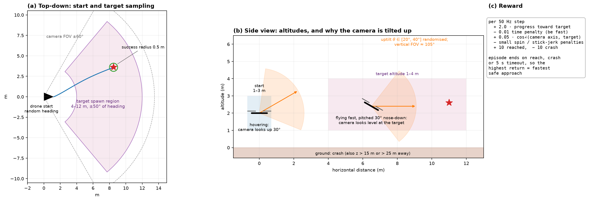
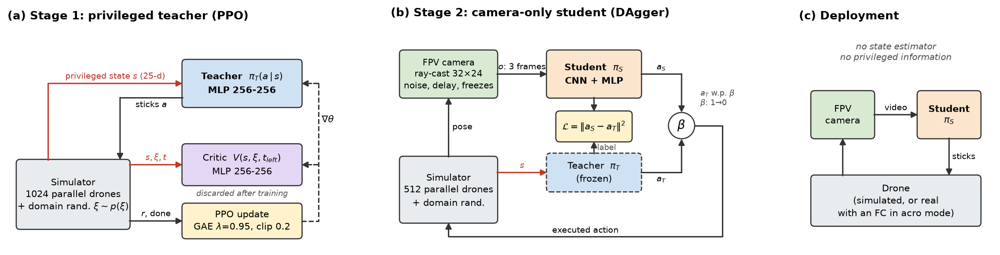
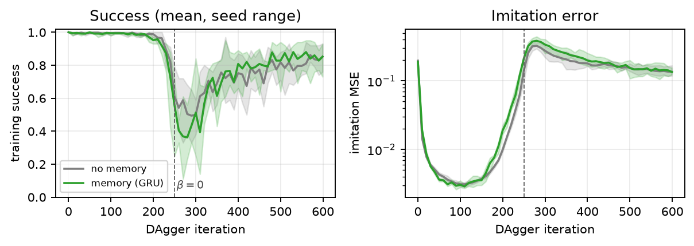

From pixels to sticks: three lessons from building a camera-only FPV pilot
A simulated racing drone learns to fly to a distant target from noisy 32×24 video alone, trained end to end in pure JAX on one laptop CPU. The algorithms mattered less than three habits: bounding the problem, building up slowly, and investing in a pipeline that made every experiment cheap.

01Formulate and bound the problem first
The starting point was a vague question: can a drone fly itself the way a human FPV pilot does, from video alone? Before writing any learning code I turned it into something that could be built, measured and finished:
- Who it is for. The answer had to be useful to people building camera-first drones, so the pilot gets what such a drone actually has: delayed, noisy, low-resolution video and its own past stick commands. No GPS, no state estimate.
- What it does. It outputs throttle plus roll, pitch and yaw rates (acro mode), the hardest and most honest control interface, with no stabilised mode to lean on.
- How we know it works. Success, crash and timeout rates over 1024 episodes, with identical seeds for every pilot, against a fixed goal radius and time limit.
- What is out of scope. Obstacles, multiple targets and real hardware, written down so they could not creep in.
Then I cut it down further. Version one only had targets 4–12 m away and 5-second flights. It was small enough to finish in an afternoon of compute and still the real problem. Only when it worked did the scope grow to targets 100–200 m away, 0–100 m altitude and a ~40 m/s drone.

Bounding also meant making the simulator honest about what the user would really face. Each episode draws a different drone, wind and camera (18 randomised parameters), with latency, motor lag, battery sag and frame freezes. When a convenient shortcut made results look too good, such as drawing a far target bigger than a pixel, it was removed, even though the numbers dropped.
02Build up slowly, one verified layer at a time
Learning acrobatic flight from pixels in one go is slow and fragile. So the system was assembled as a stack of layers, each shipped only after the one below it was measured:
- Teacher: a policy trained with full state information. It had to be near perfect first (99.9% at long range), because a weak teacher makes every later result meaningless.
- Student by imitation: the camera-only student copies the teacher with DAgger, flying itself while the teacher labels what it should have done. Plain behaviour cloning managed only 16.4%; learning to recover from its own mistakes was essential.
- Memory: a GRU, the single most robust gain (+21.7 points).
- RL fine-tuning: the student practises on its own, with an imitation anchor that fades out.

Building slowly also made failures legible. The first long-range student scored 0.6%. Because only one thing had changed, the cause was findable: the teacher flew straight at targets the camera could not yet see, so the student was imitating something impossible. The fix was a teacher limited to what the camera could see, which searches the way the student must (99.5%, and now copyable).
The same discipline applied to claims. When a review asked for a control experiment, a favourite conclusion ("memory tracks attitude") turned out wrong: memory carries velocity (R² 0.57 → 0.79). An early single-seed "+18 points from RL" shrank to a defensible +3 to +7 once compared against a compute-matched control over 5 seeds.
| Long range, camera only, 5 seeds | Imitation | + more DAgger | + RL fine-tune |
|---|---|---|---|
| No memory | 44.8 ± 12.9% | 60.3 ± 6.9% | 67.5 ± 5.5% |
| Memory (GRU) | 66.5 ± 6.8% | 74.2 ± 6.6% | 77.2 ± 10.2% |
03Build a systematic pipeline to speed up experimentation
Over the project there were dozens of variants, seeds and ablations. Running them by hand would have capped how many questions I could ask. So the experiment loop itself was treated as the product:
- One command reproduces everything.
reproduce.shruns every training run, evaluation, figure and the video. Each step skips work that already exists, so a crash or a reboot costs minutes of rework, not a restart. - Clear interfaces. Training, evaluation and analysis are small CLI tools with explicit flags; every checkpoint stores the exact simulator and arguments that produced it, and every evaluation is written as JSON to
results/. A person, a script or an automated agent can launch, compare and resume runs the same way. - Reliability and cost by design. Atomic, periodic checkpoints; throughput logged per interval, which exposed thermal throttling on a fanless laptop; hand-written convolutions after XLA's CPU kernels proved slow inside training loops. The whole study runs on one laptop with no cloud bill.
- A console for people. A small web front end on top of the same tools lets you configure the environment, drone, target and training, schedule runs, and watch progress bars and live success curves, with duration estimates calibrated on the machine and guard rails against missing checkpoints, overwrites and runaway jobs.
- Results flow straight into communication. Figures, tables and the video are generated by scripts from the saved results and checkpoints, so a new result updates every artefact without retyping a number.

The pipeline also made the work easy to extend. A follow-up that swaps the camera for a 640×512 thermal sensor over an analog video link, adds drone mass and a noisy target cue, reused every stage unchanged: new sensor model in, same training, evaluation and console out.
→Where it stands
The best camera-only student reaches 77% of targets 100–200 m away at up to 40 m/s, against 3% for a carefully tuned classical pilot. Most remaining failures are search, not control: in 55–66% of timeouts the student never gets within 20 m. That sets the next iteration: help the pilot find the target, then take it to hardware.